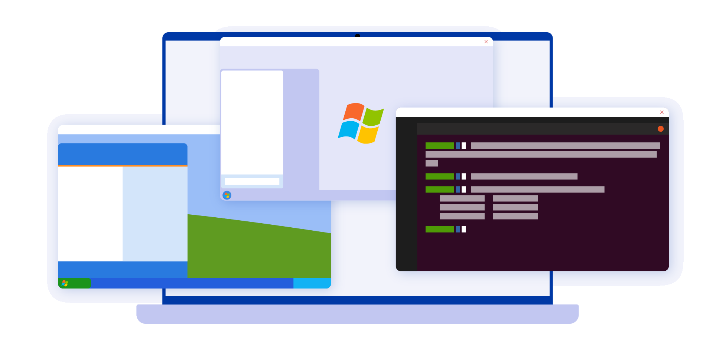

Introducción

Hoy en día un entorno de trabajo que se precie debe estar preparado para trabajar de forma modular y permitir la comunicación entre diversos dispositivos que, por supuesto, trabajarán en ocasiones con Sistemas Operativos distintos. En este breve tutorial vamos a enseñarte a usar un servicio llamado Samba desde Ubuntu para permitir la comunicación y la transferencia de archivos entre Linux y Windows de manera más sencilla de lo que podrías pensar.